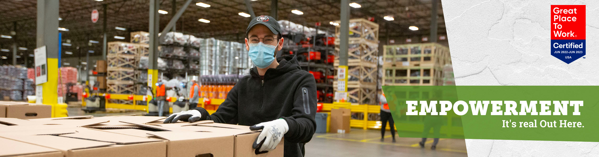
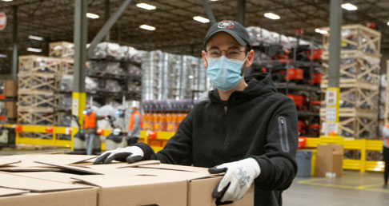
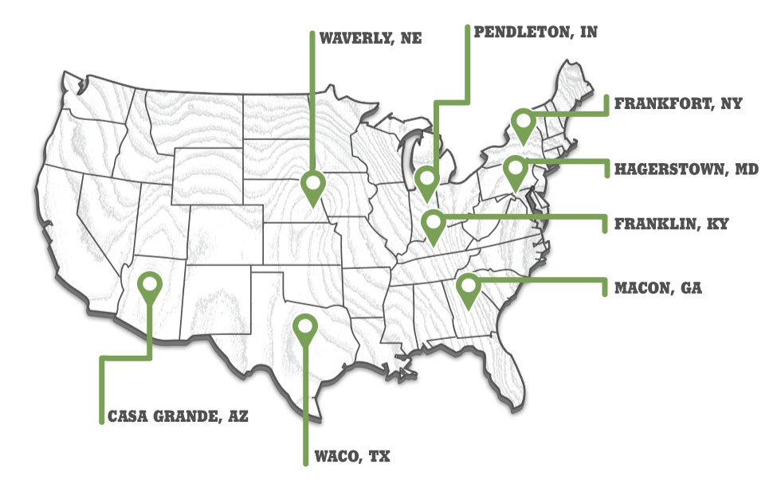

Tractor Supply Distribution Centers


Keeping a business like Tractor Supply Company fully stocked is no small task. Behind the scenes, we rely on our Distribution Centers to make sure we have the latest products for our customers, and plenty of them. That's why we continue to invest in and grow each of our strategically located centers around the country.

Learn More About Our DC Locations
Types of positions at our Distribution Centers
Frequently Asked Questions
I forgot my password. Can I retrieve or reset it?
Yes, if you forgot your password, you can easily reset it. Just click Log back in! at the top right corner of any page on the career site. You'll be directed to the Login page, where you'll see a link for Forgot your password?. Click that link, enter your email address, and then check your email for directions to reset your password.
I might already have an online profile. How would I know?
On many organizations' career sites, if you already have an online profile, you'll find out upon starting your job application:
- If you DO have a profile, the system will confirm this once you enter your email address. Depending on the setup of the career site, you'll either be directed to the Login page—meaning you have a profile to log in to—or you'll be alerted via error message that your email is already attached to a profile. (The system does not allow multiple profiles with the same email address.)
- If you DO NOT have a profile, you'll immediately be directed to build a new profile after entering your email address.
How can I check my status for a job I've applied to?
You can check your status by logging in to your profile and reviewing your candidate dashboard. The dashboard will display all positions you've applied to, along with the status of each one.
If you have any questions about your job status, you can always contact the organization you have applied to.
I didn't finish my application. How can I complete it?
You can do this through the candidate dashboard in your online profile. In the Actions column, you'll see a Continue Application button next to all jobs in which you have an incomplete application. Clicking this button allows you to continue your application from where you left off.